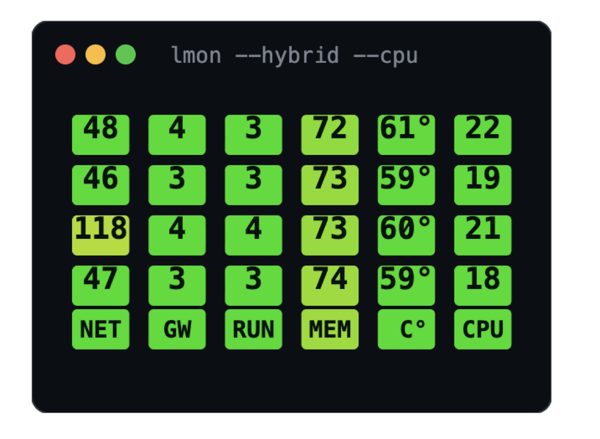
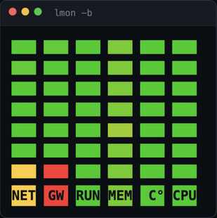
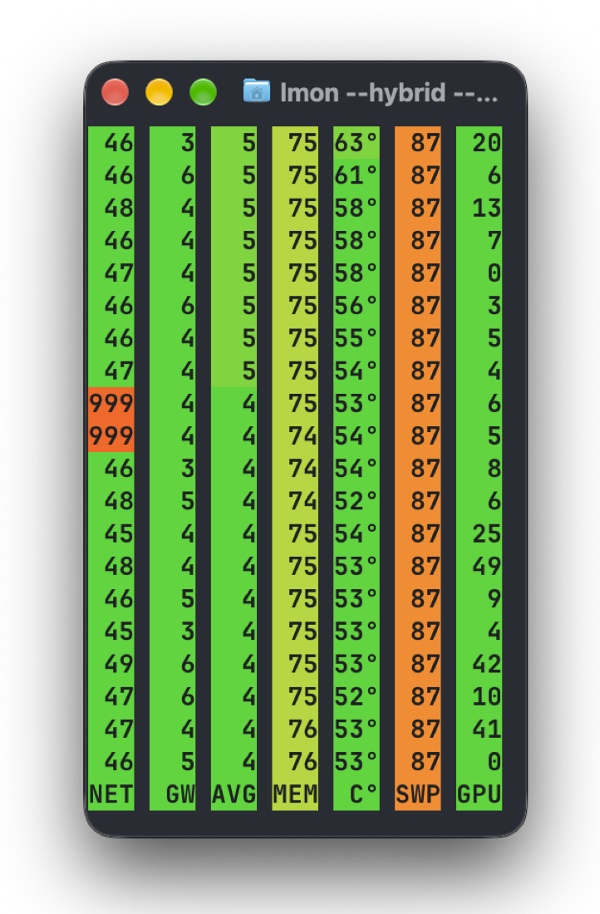
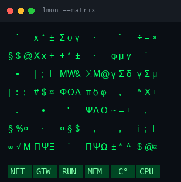
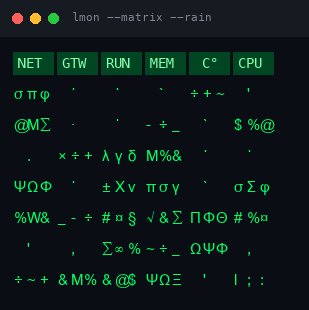

lmon
The pulse of your computer.
In one line.
Network, CPU, memory, temperature and disk — as color in your terminal. No dashboards, no heavy panels.
brew install martiyanov/tap/lmon
sudo dpkg -i lmon_amd64.deb
GitHub · README · modes · quick start
Output modes






Quick start
diagnostics
lmon lmon --profile server lmon --bars lmon --mono --compact lmon --matrix --rain
scripts
lmon --once lmon --once --json lmon --once --exit-code lmon --top 10
Settings
One config file — and lmon starts with the columns you need:
lmon --save-config, then edit ~/.config/lmon/config.